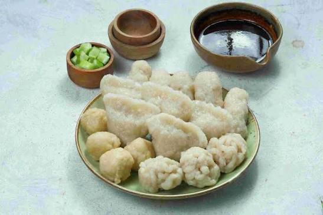
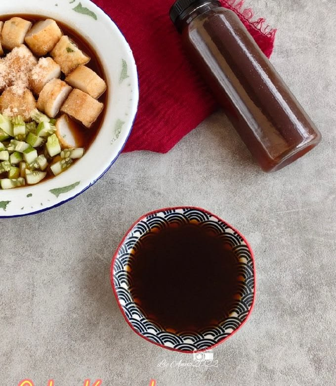
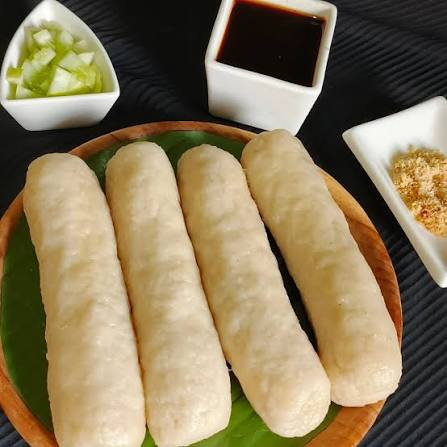
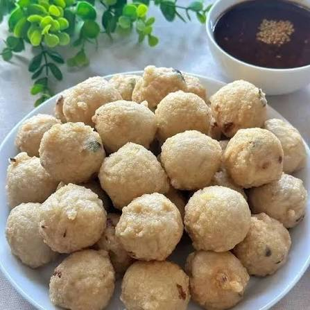
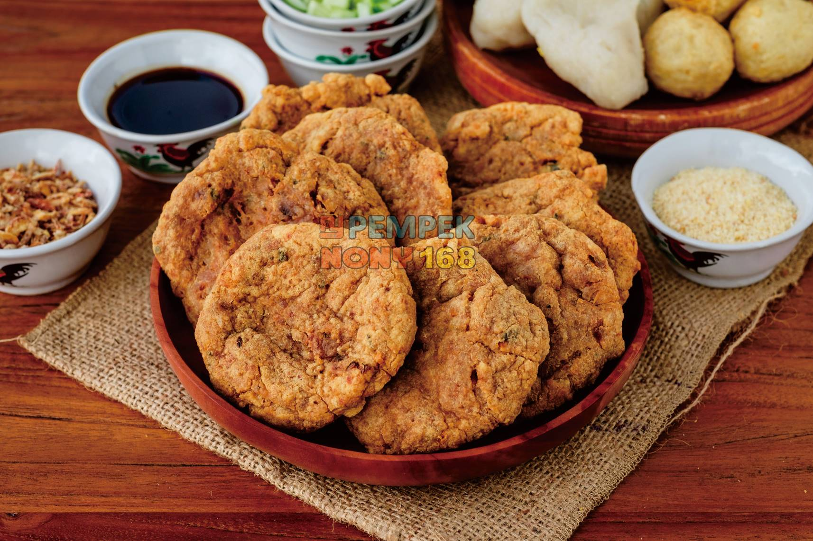
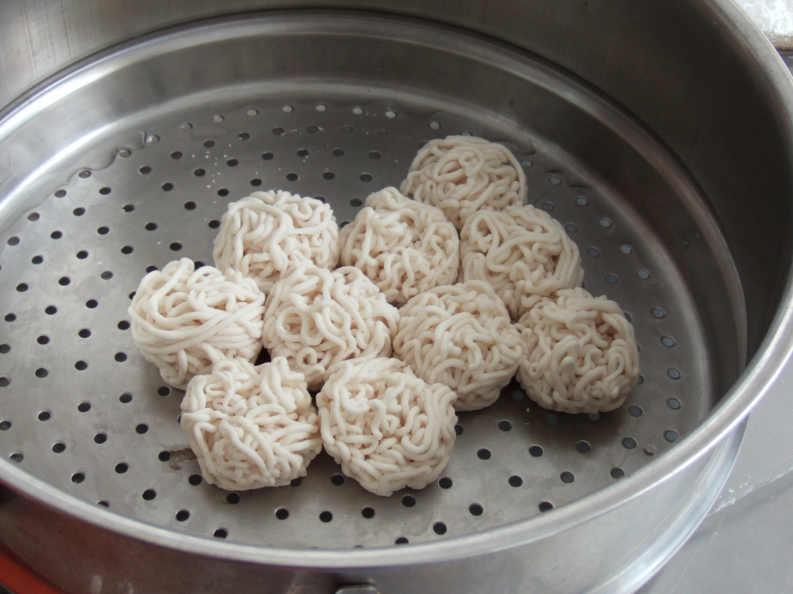
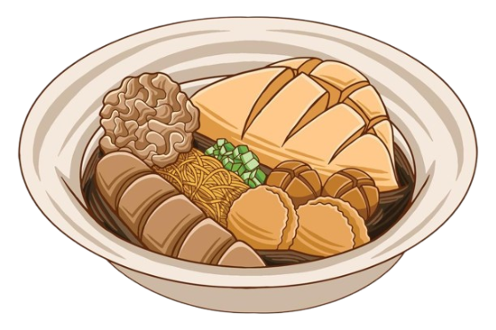
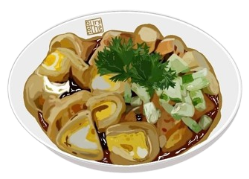

Sebelum membahas tentang pempek, apa itu Budaya? Budaya adalah ideologi, kepercayaan,
kebiasaan, tradisi, pakaian, makanan, rumah khas yang dihasilkan oleh manusia. Lalu,
budaya nasional adalah budaya yang berasal dari suatu daerah di Indonesia. Begitu,
pempek adalah salah satu budaya khas Palembang (Sumatera Selatan). Bahan Pempek adalah
daging ikan, tepung kanji/ tepung sagu, air, telur, bawang putih yang dihaluskan, penyedap
rasa, dan garam. Pempek biasa disajikan dengan cuko. Cuko adalah saus hitam yang terbuat dari
gula merah, cuka, bawang putih dan cabai. Selain itu, pempek memiliki banyak variasi dan jenis
berdasarkan bentuknya.


Pempek Kapal Selam

Pempek yang memiliki telur ayam utuh di dalamnya. Pempek ini bernama "kapal selam" karena bentuknya yang menyerupai kapal selam.
Pempek Telur Kecil

Jenis pempek ini hampir sama dengan kapal selam, tapi memiliki telur yang lebih kecil. Pempek ini cocok untuk seseorang yang ingin porsi ringan.
Pempek Lenjer

Pempek yang polos dan tidak ada isian. Biasanya memiliki tekstur yang lembut dan bentuk yang panjang. Terkadang dipotong menjadi bagian-bagian kecil sebelum disajikan/dimakan.
Pempek Adaan

Pempek yang terbentuk seperti bakso goreng. Oleh karena itu, beberapa orang memanggil jenis ini sebagai "pempek bulat." Pempek ini juga memiliki luar yang krispi dan dalam yang lembut.
Pempek Kulit

Pempek yang terbuat dari gabungan daging dan kulit ikan. Warnanya lebih gelap dan rasanya lebih kuat dibanding pempek lain.
Pempek Keriting

Pempek yang menyerupai gumpalan mie kecil. Jenis ini biasanya bertekstur lembut. Lalu, proses pembuatan pempek ini lebih susah dibanding jenis lain dikarenakan menggunakan pirikan.
Dan Lain Sebagainya...

Sejarah Pempek mulai saat masuknya para perantau Tionghoa ke Palembang semasa
pemerintahan Kesultanan Palembang Darussalam ketika dipimpin oleh Sultan Mahmud
Badaruddin II pada abad ke-16 Masehi. Pempek dijual keliling kota oleh seseorang asal
Tionghoa yang sering dipanggil apek di kisaran tahun 1617 M. Arti apek di Bahasa Tionghoa
adalah paman atau laki-laki tua. Apek yang tinggal di pinggiran Sungai Musi memiliki ide untuk
memanfaatkan potensi ikan dengan mengolahnya menjadi makanan selain digulai dan digoreng. Akhirnya,
apek mengolah ikan hasil tangkapannya dengan mencampurnya bersama tepung. Setelah itu apek pun menjual
makanan hasil buatannya yang belum memiliki nama. Saat ada yang ingin membeli, mereka akan memanggil
apek dengan "peek..peek", hingga akhirnya menjadi asal mula nama pempek. Jadi, bisa disimpulkan bahwa
sejarah pempek melibatkan kebudayaan kuliner dari Tiongkok.
Pengalaman saya dengan pempek mulai sesaat nenek saya memberi ibu saya pempek lenjer. Saat saya
merasakannya, saya mulai tertarik untuk mencoba dan mempelajari tentang pempek. Ini dikarenakan
rasa dan teksturnya sangat unik dibanding makanan khas Indonesia lainnya. Lalu, nenek saya
menyajikan lebih banyak jenis pempek, seperti adaan dan kulit. Karena itu, saya semakin tertarik
untuk mempelajari segala jenis dan sejarah pempek. Pada akhirnya, salah satu makanan khas
Indonesia favorit saya adalah pempek.

https://id.wikipedia.org/wiki/Pempek (diakses pada Rabu, 2 September 2026 pukul 09.44 WIB)
https://bake.co.id/14-jenis-pempek-palembang-yang-harus-kamu-tahu/ (diakses pada Rabu, 2 September 2026 pukul 09.46 WIB)
https://www.kompas.com/food/read/2021/03/01/110400575/mengenal-9-jenis-pempek-palembang-bukan-cuma-kapal-selam?page=2 (diakses pada Rabu, 9 September 2026 pukul 09.45 WIB)